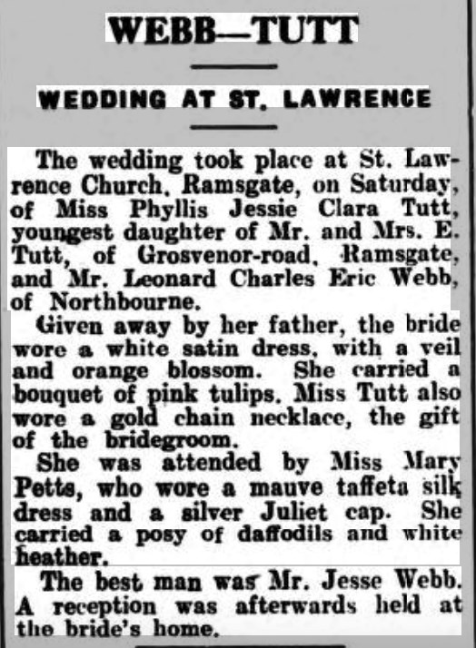

Leonard Charles Eric Webb 1917 - 1947
[ Home ] | [ Calendar ] | [ Surnames Index ] | [ Family History ], Leonard Webb, the husband of Phyllis Jessie Clara Tutt (the second cousin once-removed on the father's side of Nigel Horne), was born in Finglesham, Kent, England on Feb 6, 19171,2,3. He married Phyllis (a domestic servant) in St Lawrence, Thanet, Kent, England on Mar 30, 19404. On Sep 29, 1939, he lived in Northbourne, Kent1.
He died on Aug 6, 1947 in Finglesham3.
Citations
- 1939 Register - Findmypast (was the son of the head of the household)
- England & Wales births 1837-2006 - Findmypast
- England & Wales deaths 1837-2007 - Findmypast
- England & Wales Marriages 1837-2005 - Findmypast
Media
Thanet Advertiser - 5 Apr 1940

England & Wales marriages 1837-2005 - BMD/M/1940/1/AZ/001651/060
England & Wales births 1837-2006 - BMD/B/1917/1/AZ/001404/127
England & Wales deaths 1837-2007 - BMD/D/1947/3/AZ/000886/149
1939 Register - TNA-R39-1822-1822K-020-31
Family Tree

Generated by Ged2Site. Last updated on Jul 20, 2025